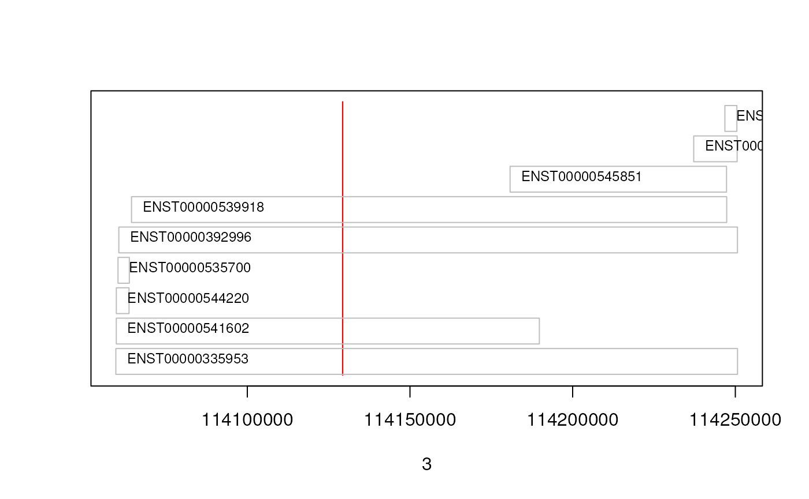
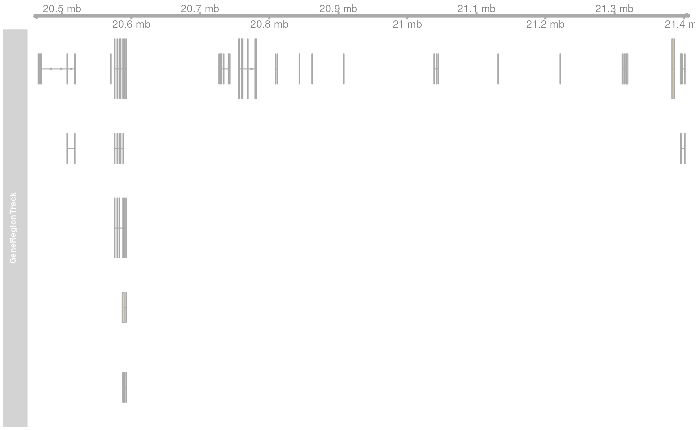
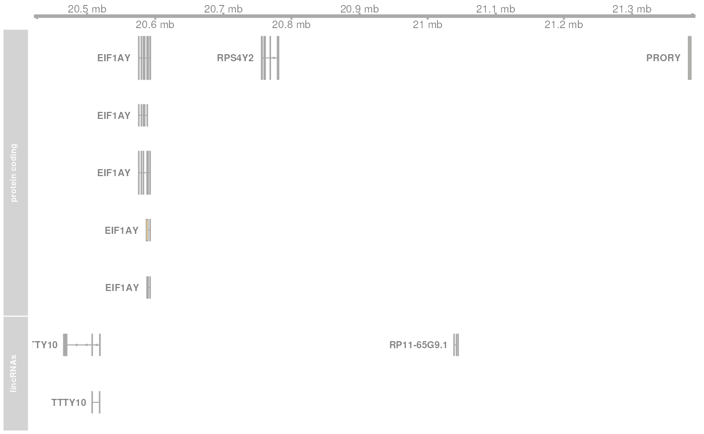

Generating an using Ensembl based annotation packages
Johannes Rainer
Source:vignettes/ensembldb.Rmd
ensembldb.RmdIntroduction
The ensembldb package provides functions to create and
use transcript centric annotation databases/packages. The annotation for
the databases are directly fetched from Ensembl
1 using their
Perl API. The functionality and data is similar to that of the
TxDb packages from the GenomicFeatures
package, but, in addition to retrieve all gene/transcript models and
annotations from the database, the ensembldb package
provides also a filter framework allowing to retrieve annotations for
specific entries like genes encoded on a chromosome region or transcript
models of lincRNA genes. From version 1.7 on, EnsDb
databases created by the ensembldb package contain also
protein annotation data (see Section 11 for
the database layout and an overview of available attributes/columns).
For more information on the use of the protein annotations refer to the
proteins vignette.
Another main goal of this package is to generate versioned
annotation packages, i.e. annotation packages that are build for a
specific Ensembl release, and are also named according to that
(e.g. EnsDb.Hsapiens.v86 for human gene definitions of the
Ensembl code database version 86). This ensures reproducibility, as it
allows to load annotations from a specific Ensembl release also if newer
versions of annotation packages/releases are available. It also allows
to load multiple annotation packages at the same time in order to
e.g. compare gene models between Ensembl releases.
In the example below we load an Ensembl based annotation package for
Homo sapiens, Ensembl version 86. The EnsDb object
providing access to the underlying SQLite database is bound to the
variable name EnsDb.Hsapiens.v86.
library(EnsDb.Hsapiens.v86)
## Making a "short cut"
edb <- EnsDb.Hsapiens.v86
## print some informations for this package
edb## EnsDb for Ensembl:
## |Backend: SQLite
## |Db type: EnsDb
## |Type of Gene ID: Ensembl Gene ID
## |Supporting package: ensembldb
## |Db created by: ensembldb package from Bioconductor
## |script_version: 0.3.0
## |Creation time: Thu May 18 16:32:27 2017
## |ensembl_version: 86
## |ensembl_host: localhost
## |Organism: homo_sapiens
## |taxonomy_id: 9606
## |genome_build: GRCh38
## |DBSCHEMAVERSION: 2.0
## | No. of genes: 63970.
## | No. of transcripts: 216741.
## |Protein data available.
## For what organism was the database generated?
organism(edb)## [1] "Homo sapiens"Using ensembldb annotation packages to retrieve
specific annotations
One of the strengths of the ensembldb package and the
related EnsDb databases is its implementation of a filter
framework that enables to efficiently extract data sub-sets from the
databases. The ensembldb package supports most of the
filters defined in the AnnotationFilter Bioconductor
package and defines some additional filters specific to the data stored
in EnsDb databases. Filters can be passed directly to all
methods extracting data from an EnsDb (such as
genes, transcripts or exons).
Alternatively it is possible with the addFilter or
filter functions to add a filter directly to an
EnsDb which will then be used in all queries on that
object.
The supportedFilters method can be used to get an
overview over all supported filter classes, each of them (except the
GRangesFilter) working on a single column/field in the
database.
supportedFilters(edb)## filter field
## 1 EntrezFilter entrez
## 2 ExonEndFilter exon_end
## 3 ExonIdFilter exon_id
## 4 ExonRankFilter exon_rank
## 5 ExonStartFilter exon_start
## 6 GeneBiotypeFilter gene_biotype
## 7 GeneEndFilter gene_end
## 8 GeneIdFilter gene_id
## 9 GenenameFilter genename
## 10 GeneNameFilter gene_name
## 11 GeneStartFilter gene_start
## 12 GRangesFilter <NA>
## 13 ProtDomIdFilter prot_dom_id
## 14 ProteinDomainIdFilter protein_domain_id
## 15 ProteinDomainSourceFilter protein_domain_source
## 16 ProteinIdFilter protein_id
## 17 SeqNameFilter seq_name
## 18 SeqStrandFilter seq_strand
## 19 SymbolFilter symbol
## 20 TxBiotypeFilter tx_biotype
## 21 TxEndFilter tx_end
## 22 TxIdFilter tx_id
## 23 TxNameFilter tx_name
## 24 TxStartFilter tx_start
## 25 UniprotDbFilter uniprot_db
## 26 UniprotFilter uniprot
## 27 UniprotMappingTypeFilter uniprot_mapping_typeThese filters can be divided into 3 main filter types:
-
IntegerFilter: filter classes extending this basic object can take a single numeric value as input and support the conditions==,!=,>,<,>=and<=. All filters that work on chromosomal coordinates, such as theGeneEndFilterextendIntegerFilter. -
CharacterFilter: filter classes extending this object can take a single or multiple character values as input and allow conditions:==,!=,"startsWith","endsWith"and"contains". All filters working on IDs extend this class. -
GRangesFilter: takes aGRangesobject as input and supports all conditions thatfindOverlapsfrom theIRangespackage supports ("any","start","end","within","equal"). Note that these have to be passed using the parametertypeto the constructor function.
The supported filters are:
-
EntrezFilter: allows to filter results based on NCBI Entrezgene identifiers of the genes. -
ExonEndFilter: filter using the chromosomal end coordinate of exons. -
ExonIdFilter: filter based on the (Ensembl) exon identifiers. -
ExonRankFilter: filter based on the rank (index) of an exon within the transcript model. Exons are always numbered from 5’ to 3’ end of the transcript, thus, also on the reverse strand, the exon 1 is the most 5’ exon of the transcript. -
ExonStartFilter: filter using the chromosomal start coordinate of exons. -
GeneBiotypeFilter: filter using the gene biotypes defined in the Ensembl database; use thelistGenebiotypesmethod to list all available biotypes. -
GeneEndFilter: filter using the chromosomal end coordinate of gene. -
GeneIdFilter: filter based on the Ensembl gene IDs. -
GeneNameFilter: filter based on the names (symbols) of the genes. -
GeneStartFilter: filter using the chromosomal start coordinate of gene. -
GRangesFilter: allows to retrieve all features (genes, transcripts or exons) that are either within (setting parametertypeto “within”) or partially overlapping (settingtypeto “any”) the defined genomic region/range. Note that, depending on the called method (genes,transcriptsorexons) the start and end coordinates of either the genes, transcripts or exons are used for the filter. For methodsexonsBy,cdsByandtxBythe coordinates ofbyare used. -
SeqNameFilter: filter by the name of the chromosomes the genes are encoded on. -
SeqStrandFilter: filter for the chromosome strand on which the genes are encoded. -
SymbolFilter: filter on gene symbols; note that no database columns symbol is available in anEnsDbdatabase and hence the gene name is used for filtering. -
TxBiotypeFilter: filter on the transcript biotype defined in Ensembl; use thelistTxbiotypesmethod to list all available biotypes. -
TxEndFilter: filter using the chromosomal end coordinate of transcripts. -
TxIdFilter: filter on the Ensembl transcript identifiers. -
TxNameFilter: to be compliant withTxDbannotation resources from theGenomicFeaturespackage, thetx_namedatabase column contains also the transcript IDs and hence theTxNameFilteris identical to theTxIdFilter. Transcript names (external name in the Ensembl databases) are provided in column"tx_external_name". -
TxExternalNameFilter: filter based on the transcript names which are provided by Ensembl with the external name attribute (or are listed in the"transcript_name"field in GTF files. -
TxStartFilter: filter using the chromosomal start coordinate of transcripts.
In addition to the above listed DNA-RNA-based filters, protein-specific filters are also available:
-
ProtDomIdFilter,ProteinDomainIdFilter: filter by the protein domain ID. -
ProteinDomainSourceFilter: filter by the source of the protein domain (database or method, e.g. pfam). -
ProteinIdFilter: filter by Ensembl protein ID filters. -
UniprotDbFilter: filter by the name of the Uniprot database. -
UniprotFilter: filter by the Uniprot ID. -
UniprotMappingTypeFilter: filter by the mapping type of Ensembl protein IDs to Uniprot IDs.
These can however only be used on EnsDb databases that
provide protein annotations, i.e. for which a call to
hasProteinData returns TRUE.
EnsDb databases for more recent Ensembl versions
(starting from Ensembl 87) provide also evidence levels for individual
transcripts in the tx_support_level database column. Such
databases support also a TxSupportLevelFilter filter to use
this columns for filtering.
A simple use case for the filter framework would be to get all
transcripts for the gene BCL2L11. To this end we specify a
GeneNameFilter with the value BCL2L11. As a result
we get a GRanges object with start,
end, strand and seqname being the
start coordinate, end coordinate, chromosome name and strand for the
respective transcripts. All additional annotations are available as
metadata columns. Alternatively, by setting return.type to
“DataFrame”, or “data.frame” the method would return a
DataFrame or data.frame object instead of the
default GRanges.
Tx <- transcripts(edb, filter = GeneNameFilter("BCL2L11"))
Tx## GRanges object with 28 ranges and 7 metadata columns:
## seqnames ranges strand | tx_id
## <Rle> <IRanges> <Rle> | <character>
## ENST00000432179 2 111119378-111124112 + | ENST00000432179
## ENST00000308659 2 111120914-111165048 + | ENST00000308659
## ENST00000337565 2 111120914-111128844 + | ENST00000337565
## ENST00000622509 2 111120914-111168445 + | ENST00000622509
## ENST00000619294 2 111120914-111168445 + | ENST00000619294
## ... ... ... ... . ...
## ENST00000452231 2 111123746-111164231 + | ENST00000452231
## ENST00000361493 2 111123746-111164231 + | ENST00000361493
## ENST00000431217 2 111123746-111164352 + | ENST00000431217
## ENST00000439718 2 111123746-111164643 + | ENST00000439718
## ENST00000438054 2 111123752-111146284 + | ENST00000438054
## tx_biotype tx_cds_seq_start tx_cds_seq_end
## <character> <integer> <integer>
## ENST00000432179 protein_coding 111123746 111124112
## ENST00000308659 protein_coding 111123746 111164231
## ENST00000337565 protein_coding 111123746 111128751
## ENST00000622509 protein_coding 111123746 111161439
## ENST00000619294 protein_coding 111123746 111144501
## ... ... ... ...
## ENST00000452231 nonsense_mediated_de.. 111123746 111161439
## ENST00000361493 nonsense_mediated_de.. 111123746 111130235
## ENST00000431217 nonsense_mediated_de.. 111123746 111144501
## ENST00000439718 nonsense_mediated_de.. 111123746 111151851
## ENST00000438054 protein_coding 111123752 111144491
## gene_id tx_name gene_name
## <character> <character> <character>
## ENST00000432179 ENSG00000153094 ENST00000432179 BCL2L11
## ENST00000308659 ENSG00000153094 ENST00000308659 BCL2L11
## ENST00000337565 ENSG00000153094 ENST00000337565 BCL2L11
## ENST00000622509 ENSG00000153094 ENST00000622509 BCL2L11
## ENST00000619294 ENSG00000153094 ENST00000619294 BCL2L11
## ... ... ... ...
## ENST00000452231 ENSG00000153094 ENST00000452231 BCL2L11
## ENST00000361493 ENSG00000153094 ENST00000361493 BCL2L11
## ENST00000431217 ENSG00000153094 ENST00000431217 BCL2L11
## ENST00000439718 ENSG00000153094 ENST00000439718 BCL2L11
## ENST00000438054 ENSG00000153094 ENST00000438054 BCL2L11
## -------
## seqinfo: 1 sequence from GRCh38 genome## [1] 111119378 111120914 111120914 111120914 111120914 111120914
## or extract the biotype with
head(Tx$tx_biotype)## [1] "protein_coding" "protein_coding" "protein_coding" "protein_coding"
## [5] "protein_coding" "protein_coding"The parameter columns of the extractor methods (such as
exons, genes or transcripts)
allows to specify which database attributes (columns) should be
retrieved. The exons method returns by default all
exon-related columns, the transcripts all columns from the
transcript database table and the genes all from the gene
table. Note however that in the example above we got also a column
gene_name although this column is not present in the
transcript database table. By default the methods return also all
columns that are used by any of the filters submitted with the
filter argument (thus, because a
GeneNameFilter was used, the column gene_name
is also returned). Setting
returnFilterColumns(edb) <- FALSE disables this option
and only the columns specified by the columns parameter are
retrieved.
Instead of passing a filter object to the method it is also
possible to provide a filter expression written as a
formula. The formula has to be written in the
form ~ <field> <condition> <value> with
<field> being the field (database column) in the
database, <condition> the condition for the filter
object and <value> its value. Use the
supportedFilter method to get the field names corresponding
to each filter class.
## Use a filter expression to perform the filtering.
transcripts(edb, filter = ~ gene_name == "ZBTB16")## GRanges object with 9 ranges and 7 metadata columns:
## seqnames ranges strand | tx_id
## <Rle> <IRanges> <Rle> | <character>
## ENST00000335953 11 114059593-114250676 + | ENST00000335953
## ENST00000541602 11 114059725-114189764 + | ENST00000541602
## ENST00000544220 11 114059737-114063646 + | ENST00000544220
## ENST00000535700 11 114060257-114063744 + | ENST00000535700
## ENST00000392996 11 114060507-114250652 + | ENST00000392996
## ENST00000539918 11 114064412-114247344 + | ENST00000539918
## ENST00000545851 11 114180766-114247296 + | ENST00000545851
## ENST00000535379 11 114237207-114250557 + | ENST00000535379
## ENST00000535509 11 114246790-114250476 + | ENST00000535509
## tx_biotype tx_cds_seq_start tx_cds_seq_end
## <character> <integer> <integer>
## ENST00000335953 protein_coding 114063301 114250555
## ENST00000541602 retained_intron <NA> <NA>
## ENST00000544220 protein_coding 114063301 114063646
## ENST00000535700 protein_coding 114063301 114063744
## ENST00000392996 protein_coding 114063301 114250555
## ENST00000539918 nonsense_mediated_de.. 114064412 114121827
## ENST00000545851 processed_transcript <NA> <NA>
## ENST00000535379 processed_transcript <NA> <NA>
## ENST00000535509 retained_intron <NA> <NA>
## gene_id tx_name gene_name
## <character> <character> <character>
## ENST00000335953 ENSG00000109906 ENST00000335953 ZBTB16
## ENST00000541602 ENSG00000109906 ENST00000541602 ZBTB16
## ENST00000544220 ENSG00000109906 ENST00000544220 ZBTB16
## ENST00000535700 ENSG00000109906 ENST00000535700 ZBTB16
## ENST00000392996 ENSG00000109906 ENST00000392996 ZBTB16
## ENST00000539918 ENSG00000109906 ENST00000539918 ZBTB16
## ENST00000545851 ENSG00000109906 ENST00000545851 ZBTB16
## ENST00000535379 ENSG00000109906 ENST00000535379 ZBTB16
## ENST00000535509 ENSG00000109906 ENST00000535509 ZBTB16
## -------
## seqinfo: 1 sequence from GRCh38 genomeFilter expression have to be written as a formula (i.e. starting with
a ~) in the form column name followed by the
logical condition.
Alternatively, EnsDb objects can be filtered directly
using the filter function. In the example below we use the
filter function to filter the EnsDb object and
pass that filtered database to the transcripts method using
the %>% from the magrittr package.
library(magrittr)
edb %>% filter(~ symbol == "BCL2" & tx_biotype != "protein_coding") %>%
transcripts## GRanges object with 1 range and 6 metadata columns:
## seqnames ranges strand | tx_id
## <Rle> <IRanges> <Rle> | <character>
## ENST00000590515 18 63128212-63161869 - | ENST00000590515
## tx_biotype tx_cds_seq_start tx_cds_seq_end
## <character> <integer> <integer>
## ENST00000590515 processed_transcript <NA> <NA>
## gene_id tx_name
## <character> <character>
## ENST00000590515 ENSG00000171791 ENST00000590515
## -------
## seqinfo: 1 sequence from GRCh38 genomeAdding a filter to an EnsDb enables this filter
(globally) on all subsequent queries on that object. We could thus
filter an EnsDb to (virtually) contain only features
encoded on chromosome Y.
edb_y <- addFilter(edb, SeqNameFilter("Y"))
## All subsequent filters on that EnsDb will only work on features encoded on
## chromosome Y
genes(edb_y)## GRanges object with 523 ranges and 6 metadata columns:
## seqnames ranges strand | gene_id
## <Rle> <IRanges> <Rle> | <character>
## ENSG00000251841 Y 2784749-2784853 + | ENSG00000251841
## ENSG00000184895 Y 2786855-2787699 - | ENSG00000184895
## ENSG00000237659 Y 2789827-2790328 + | ENSG00000237659
## ENSG00000232195 Y 2827982-2828218 + | ENSG00000232195
## ENSG00000129824 Y 2841486-2932000 + | ENSG00000129824
## ... ... ... ... . ...
## ENSG00000224240 Y 26549425-26549743 + | ENSG00000224240
## ENSG00000227629 Y 26586642-26591601 - | ENSG00000227629
## ENSG00000237917 Y 26594851-26634652 - | ENSG00000237917
## ENSG00000231514 Y 26626520-26627159 - | ENSG00000231514
## ENSG00000235857 Y 56855244-56855488 + | ENSG00000235857
## gene_name gene_biotype seq_coord_system
## <character> <character> <character>
## ENSG00000251841 RNU6-1334P snRNA chromosome
## ENSG00000184895 SRY protein_coding chromosome
## ENSG00000237659 RNASEH2CP1 processed_pseudogene chromosome
## ENSG00000232195 TOMM22P2 processed_pseudogene chromosome
## ENSG00000129824 RPS4Y1 protein_coding chromosome
## ... ... ... ...
## ENSG00000224240 CYCSP49 processed_pseudogene chromosome
## ENSG00000227629 SLC25A15P1 unprocessed_pseudogene chromosome
## ENSG00000237917 PARP4P1 unprocessed_pseudogene chromosome
## ENSG00000231514 FAM58CP processed_pseudogene chromosome
## ENSG00000235857 CTBP2P1 processed_pseudogene chromosome
## symbol entrezid
## <character> <list>
## ENSG00000251841 RNU6-1334P <NA>
## ENSG00000184895 SRY 6736
## ENSG00000237659 RNASEH2CP1 <NA>
## ENSG00000232195 TOMM22P2 <NA>
## ENSG00000129824 RPS4Y1 6192
## ... ... ...
## ENSG00000224240 CYCSP49 <NA>
## ENSG00000227629 SLC25A15P1 <NA>
## ENSG00000237917 PARP4P1 <NA>
## ENSG00000231514 FAM58CP <NA>
## ENSG00000235857 CTBP2P1 <NA>
## -------
## seqinfo: 1 sequence from GRCh38 genome
## Get all lincRNAs on chromosome Y
genes(edb_y, filter = ~ gene_biotype == "lincRNA")## GRanges object with 52 ranges and 6 metadata columns:
## seqnames ranges strand | gene_id
## <Rle> <IRanges> <Rle> | <character>
## ENSG00000278847 Y 2934406-2934771 - | ENSG00000278847
## ENSG00000231535 Y 3002912-3102272 + | ENSG00000231535
## ENSG00000229308 Y 4036497-4100320 + | ENSG00000229308
## ENSG00000277930 Y 4993858-4999650 - | ENSG00000277930
## ENSG00000237069 Y 6242446-6243610 - | ENSG00000237069
## ... ... ... ... . ...
## ENSG00000228296 Y 25063083-25099892 - | ENSG00000228296
## ENSG00000223641 Y 25183643-25184773 - | ENSG00000223641
## ENSG00000228786 Y 25378300-25394719 - | ENSG00000228786
## ENSG00000240450 Y 25482908-25486705 + | ENSG00000240450
## ENSG00000231141 Y 25728490-25733388 + | ENSG00000231141
## gene_name gene_biotype seq_coord_system symbol
## <character> <character> <character> <character>
## ENSG00000278847 RP11-414C23.1 lincRNA chromosome RP11-414C23.1
## ENSG00000231535 LINC00278 lincRNA chromosome LINC00278
## ENSG00000229308 AC010084.1 lincRNA chromosome AC010084.1
## ENSG00000277930 RP11-122L9.1 lincRNA chromosome RP11-122L9.1
## ENSG00000237069 TTTY23B lincRNA chromosome TTTY23B
## ... ... ... ... ...
## ENSG00000228296 TTTY4C lincRNA chromosome TTTY4C
## ENSG00000223641 TTTY17C lincRNA chromosome TTTY17C
## ENSG00000228786 LINC00266-4P lincRNA chromosome LINC00266-4P
## ENSG00000240450 CSPG4P1Y lincRNA chromosome CSPG4P1Y
## ENSG00000231141 TTTY3 lincRNA chromosome TTTY3
## entrezid
## <list>
## ENSG00000278847 <NA>
## ENSG00000231535 100873962
## ENSG00000229308 <NA>
## ENSG00000277930 <NA>
## ENSG00000237069 100101121,252955
## ... ...
## ENSG00000228296 474150,474149,114761
## ENSG00000223641 474152,474151,252949
## ENSG00000228786 <NA>
## ENSG00000240450 114758
## ENSG00000231141 474148,114760
## -------
## seqinfo: 1 sequence from GRCh38 genomeTo get an overview of database tables and available columns the
function listTables can be used. The method
listColumns on the other hand lists columns for the
specified database table.
## list all database tables along with their columns
listTables(edb)## $gene
## [1] "gene_id" "gene_name" "gene_biotype" "gene_seq_start"
## [5] "gene_seq_end" "seq_name" "seq_strand" "seq_coord_system"
## [9] "symbol"
##
## $tx
## [1] "tx_id" "tx_biotype" "tx_seq_start" "tx_seq_end"
## [5] "tx_cds_seq_start" "tx_cds_seq_end" "gene_id" "tx_name"
##
## $tx2exon
## [1] "tx_id" "exon_id" "exon_idx"
##
## $exon
## [1] "exon_id" "exon_seq_start" "exon_seq_end"
##
## $chromosome
## [1] "seq_name" "seq_length" "is_circular"
##
## $protein
## [1] "tx_id" "protein_id" "protein_sequence"
##
## $uniprot
## [1] "protein_id" "uniprot_id" "uniprot_db"
## [4] "uniprot_mapping_type"
##
## $protein_domain
## [1] "protein_id" "protein_domain_id" "protein_domain_source"
## [4] "interpro_accession" "prot_dom_start" "prot_dom_end"
##
## $entrezgene
## [1] "gene_id" "entrezid"
##
## $metadata
## [1] "name" "value"
## list columns from a specific table
listColumns(edb, "tx")## [1] "tx_id" "tx_biotype" "tx_seq_start" "tx_seq_end"
## [5] "tx_cds_seq_start" "tx_cds_seq_end" "gene_id" "tx_name"Thus, we could retrieve all transcripts of the biotype
nonsense_mediated_decay (which, according to the definitions by
Ensembl are transcribed, but most likely not translated in a protein,
but rather degraded after transcription) along with the name of the gene
for each transcript. Note that we are changing here the
return.type to DataFrame, so the method will
return a DataFrame with the results instead of the default
GRanges.
Tx <- transcripts(edb,
columns = c(listColumns(edb , "tx"), "gene_name"),
filter = TxBiotypeFilter("nonsense_mediated_decay"),
return.type = "DataFrame")
nrow(Tx)## [1] 14423
Tx## DataFrame with 14423 rows and 9 columns
## tx_id tx_biotype tx_seq_start tx_seq_end
## <character> <character> <integer> <integer>
## 1 ENST00000567466 nonsense_mediated_de.. 47578 49521
## 2 ENST00000397876 nonsense_mediated_de.. 53887 57372
## 3 ENST00000428730 nonsense_mediated_de.. 58062 65039
## 4 ENST00000417043 nonsense_mediated_de.. 62973 65037
## 5 ENST00000622194 nonsense_mediated_de.. 85386 138349
## ... ... ... ... ...
## 14419 ENST00000496411 nonsense_mediated_de.. 248855728 248859018
## 14420 ENST00000483223 nonsense_mediated_de.. 248856515 248858529
## 14421 ENST00000533647 nonsense_mediated_de.. 248857273 248858324
## 14422 ENST00000528141 nonsense_mediated_de.. 248857391 248859085
## 14423 ENST00000530986 nonsense_mediated_de.. 248857469 248859085
## tx_cds_seq_start tx_cds_seq_end gene_id tx_name
## <integer> <integer> <character> <character>
## 1 48546 48893 ENSG00000261456 ENST00000567466
## 2 54017 56360 ENSG00000161981 ENST00000397876
## 3 62884 65015 ENSG00000007384 ENST00000428730
## 4 63904 65015 ENSG00000007384 ENST00000417043
## 5 117330 138267 ENSG00000103148 ENST00000622194
## ... ... ... ... ...
## 14419 248857954 248858309 ENSG00000171163 ENST00000496411
## 14420 248857954 248858309 ENSG00000171163 ENST00000483223
## 14421 248857954 248858309 ENSG00000171163 ENST00000533647
## 14422 248858004 248858309 ENSG00000171163 ENST00000528141
## 14423 248858004 248858309 ENSG00000171163 ENST00000530986
## gene_name
## <character>
## 1 TUBB8
## 2 SNRNP25
## 3 RHBDF1
## 4 RHBDF1
## 5 NPRL3
## ... ...
## 14419 ZNF692
## 14420 ZNF692
## 14421 ZNF692
## 14422 ZNF692
## 14423 ZNF692For protein coding transcripts, we can also specifically extract their coding region. In the example below we extract the CDS for all transcripts encoded on chromosome Y.
yCds <- cdsBy(edb, filter = SeqNameFilter("Y"))
yCds## GRangesList object of length 151:
## $ENST00000155093
## GRanges object with 7 ranges and 3 metadata columns:
## seqnames ranges strand | seq_name exon_id exon_rank
## <Rle> <IRanges> <Rle> | <character> <character> <integer>
## [1] Y 2953937-2953997 + | Y ENSE00002223884 2
## [2] Y 2961074-2961646 + | Y ENSE00003645989 3
## [3] Y 2975095-2975244 + | Y ENSE00003764421 4
## [4] Y 2975511-2975654 + | Y ENSE00003768468 5
## [5] Y 2976670-2976822 + | Y ENSE00003766362 6
## [6] Y 2977940-2978080 + | Y ENSE00003766086 7
## [7] Y 2978810-2979993 + | Y ENSE00001368923 8
## -------
## seqinfo: 1 sequence from GRCh38 genome
##
## $ENST00000215473
## GRanges object with 2 ranges and 3 metadata columns:
## seqnames ranges strand | seq_name exon_id exon_rank
## <Rle> <IRanges> <Rle> | <character> <character> <integer>
## [1] Y 5056824-5057459 + | Y ENSE00001436852 1
## [2] Y 5098215-5100740 + | Y ENSE00003741448 2
## -------
## seqinfo: 1 sequence from GRCh38 genome
##
## $ENST00000215479
## GRanges object with 5 ranges and 3 metadata columns:
## seqnames ranges strand | seq_name exon_id exon_rank
## <Rle> <IRanges> <Rle> | <character> <character> <integer>
## [1] Y 6872555-6872608 - | Y ENSE00001671586 2
## [2] Y 6870006-6870053 - | Y ENSE00001645681 3
## [3] Y 6868732-6868776 - | Y ENSE00000652250 4
## [4] Y 6868037-6868462 - | Y ENSE00001667251 5
## [5] Y 6866073-6866078 - | Y ENSE00001494454 6
## -------
## seqinfo: 1 sequence from GRCh38 genome
##
## ...
## <148 more elements>Using a GRangesFilter we can retrieve all features from
the database that are either within or overlapping the specified genomic
region. In the example below we query all genes that are partially
overlapping with a small region on chromosome 11. The filter restricts
to all genes for which either an exon or an intron is partially
overlapping with the region.
## Define the filter
grf <- GRangesFilter(GRanges("11", ranges = IRanges(114129278, 114129328),
strand = "+"), type = "any")
## Query genes:
gn <- genes(edb, filter = grf)
gn## GRanges object with 1 range and 6 metadata columns:
## seqnames ranges strand | gene_id
## <Rle> <IRanges> <Rle> | <character>
## ENSG00000109906 11 114059593-114250676 + | ENSG00000109906
## gene_name gene_biotype seq_coord_system symbol
## <character> <character> <character> <character>
## ENSG00000109906 ZBTB16 protein_coding chromosome ZBTB16
## entrezid
## <list>
## ENSG00000109906 7704
## -------
## seqinfo: 1 sequence from GRCh38 genome
## Next we retrieve all transcripts for that gene so that we can plot them.
txs <- transcripts(edb, filter = GeneNameFilter(gn$gene_name))
As we can see, 4 transcripts of the gene ZBTB16 are also overlapping
the region. Below we fetch these 4 transcripts. Note, that a call to
exons will not return any features from the database, as no
exon is overlapping with the region.
transcripts(edb, filter = grf)## GRanges object with 4 ranges and 6 metadata columns:
## seqnames ranges strand | tx_id
## <Rle> <IRanges> <Rle> | <character>
## ENST00000335953 11 114059593-114250676 + | ENST00000335953
## ENST00000541602 11 114059725-114189764 + | ENST00000541602
## ENST00000392996 11 114060507-114250652 + | ENST00000392996
## ENST00000539918 11 114064412-114247344 + | ENST00000539918
## tx_biotype tx_cds_seq_start tx_cds_seq_end
## <character> <integer> <integer>
## ENST00000335953 protein_coding 114063301 114250555
## ENST00000541602 retained_intron <NA> <NA>
## ENST00000392996 protein_coding 114063301 114250555
## ENST00000539918 nonsense_mediated_de.. 114064412 114121827
## gene_id tx_name
## <character> <character>
## ENST00000335953 ENSG00000109906 ENST00000335953
## ENST00000541602 ENSG00000109906 ENST00000541602
## ENST00000392996 ENSG00000109906 ENST00000392996
## ENST00000539918 ENSG00000109906 ENST00000539918
## -------
## seqinfo: 1 sequence from GRCh38 genomeThe GRangesFilter supports also GRanges
defining multiple regions and a query will return all features
overlapping any of these regions. Besides using the
GRangesFilter it is also possible to search for transcripts
or exons overlapping genomic regions using the
exonsByOverlaps or transcriptsByOverlaps known
from the GenomicFeatures package. Note that the
implementation of these methods for EnsDb objects supports
also to use filters to further fine-tune the query.
The functions listGenebiotypes and
listTxbiotypes can be used to get an overview of
allowed/available gene and transcript biotype
## Get all gene biotypes from the database. The GeneBiotypeFilter
## allows to filter on these values.
listGenebiotypes(edb)## [1] "protein_coding" "unitary_pseudogene"
## [3] "unprocessed_pseudogene" "processed_pseudogene"
## [5] "processed_transcript" "transcribed_unprocessed_pseudogene"
## [7] "antisense" "transcribed_unitary_pseudogene"
## [9] "polymorphic_pseudogene" "lincRNA"
## [11] "sense_intronic" "transcribed_processed_pseudogene"
## [13] "sense_overlapping" "IG_V_pseudogene"
## [15] "pseudogene" "TR_V_gene"
## [17] "3prime_overlapping_ncRNA" "IG_V_gene"
## [19] "bidirectional_promoter_lncRNA" "snRNA"
## [21] "miRNA" "misc_RNA"
## [23] "snoRNA" "rRNA"
## [25] "Mt_tRNA" "Mt_rRNA"
## [27] "IG_C_gene" "IG_J_gene"
## [29] "TR_J_gene" "TR_C_gene"
## [31] "TR_V_pseudogene" "TR_J_pseudogene"
## [33] "IG_D_gene" "ribozyme"
## [35] "IG_C_pseudogene" "TR_D_gene"
## [37] "TEC" "IG_J_pseudogene"
## [39] "scRNA" "scaRNA"
## [41] "vaultRNA" "sRNA"
## [43] "macro_lncRNA" "non_coding"
## [45] "IG_pseudogene" "LRG_gene"
## Get all transcript biotypes from the database.
listTxbiotypes(edb)## [1] "protein_coding" "processed_transcript"
## [3] "nonsense_mediated_decay" "retained_intron"
## [5] "unitary_pseudogene" "TEC"
## [7] "miRNA" "misc_RNA"
## [9] "non_stop_decay" "unprocessed_pseudogene"
## [11] "processed_pseudogene" "transcribed_unprocessed_pseudogene"
## [13] "lincRNA" "antisense"
## [15] "transcribed_unitary_pseudogene" "polymorphic_pseudogene"
## [17] "sense_intronic" "transcribed_processed_pseudogene"
## [19] "sense_overlapping" "IG_V_pseudogene"
## [21] "pseudogene" "TR_V_gene"
## [23] "3prime_overlapping_ncRNA" "IG_V_gene"
## [25] "bidirectional_promoter_lncRNA" "snRNA"
## [27] "snoRNA" "rRNA"
## [29] "Mt_tRNA" "Mt_rRNA"
## [31] "IG_C_gene" "IG_J_gene"
## [33] "TR_J_gene" "TR_C_gene"
## [35] "TR_V_pseudogene" "TR_J_pseudogene"
## [37] "IG_D_gene" "ribozyme"
## [39] "IG_C_pseudogene" "TR_D_gene"
## [41] "IG_J_pseudogene" "scRNA"
## [43] "scaRNA" "vaultRNA"
## [45] "sRNA" "macro_lncRNA"
## [47] "non_coding" "IG_pseudogene"
## [49] "LRG_gene"Data can be fetched in an analogous way using the exons
and genes methods. In the example below we retrieve
gene_name, entrezid and the
gene_biotype of all genes in the database which names start
with “BCL2”.
## We're going to fetch all genes which names start with BCL.
BCLs <- genes(edb,
columns = c("gene_name", "entrezid", "gene_biotype"),
filter = GeneNameFilter("BCL", condition = "startsWith"),
return.type = "DataFrame")
nrow(BCLs)## [1] 30
BCLs## DataFrame with 30 rows and 4 columns
## gene_name entrezid gene_biotype gene_id
## <character> <list> <character> <character>
## 1 BCL10 8915 protein_coding ENSG00000142867
## 2 BCL11A 53335 protein_coding ENSG00000119866
## 3 BCL11B 64919 protein_coding ENSG00000127152
## 4 BCL2 596 protein_coding ENSG00000171791
## 5 BCL2A1 597 protein_coding ENSG00000140379
## ... ... ... ... ...
## 26 BCL9L 283149 protein_coding ENSG00000186174
## 27 BCL9P1 NA processed_pseudogene ENSG00000249238
## 28 BCLAF1 9774 protein_coding ENSG00000029363
## 29 BCLAF1P1 NA processed_pseudogene ENSG00000248966
## 30 BCLAF1P2 NA processed_pseudogene ENSG00000279800Sometimes it might be useful to know the length of genes or
transcripts (i.e. the total sum of nucleotides covered by their exons).
Below we calculate the mean length of transcripts from protein coding
genes on chromosomes X and Y as well as the average length of snoRNA,
snRNA and rRNA transcripts encoded on these chromosomes. For the first
query we combine two AnnotationFilter objects using an
AnnotationFilterList object, in the second we define the
query using a filter expression.
## determine the average length of snRNA, snoRNA and rRNA genes encoded on
## chromosomes X and Y.
mean(lengthOf(edb, of = "tx",
filter = AnnotationFilterList(
GeneBiotypeFilter(c("snRNA", "snoRNA", "rRNA")),
SeqNameFilter(c("X", "Y")))))## [1] 118.2458
## determine the average length of protein coding genes encoded on the same
## chromosomes.
mean(lengthOf(edb, of = "tx",
filter = ~ gene_biotype == "protein_coding" &
seq_name %in% c("X", "Y")))## [1] 1943.554Not unexpectedly, transcripts of protein coding genes are longer than those of snRNA, snoRNA or rRNA genes.
At last we extract the first two exons of each transcript model from the database.
## Extract all exons 1 and (if present) 2 for all genes encoded on the
## Y chromosome
exons(edb, columns = c("tx_id", "exon_idx"),
filter = list(SeqNameFilter("Y"),
ExonRankFilter(3, condition = "<")))## GRanges object with 1294 ranges and 3 metadata columns:
## seqnames ranges strand | tx_id exon_idx
## <Rle> <IRanges> <Rle> | <character> <integer>
## ENSE00002088309 Y 2784749-2784853 + | ENST00000516032 1
## ENSE00001494622 Y 2786855-2787699 - | ENST00000383070 1
## ENSE00001772499 Y 2789827-2790328 + | ENST00000454281 1
## ENSE00001614266 Y 2827982-2828218 + | ENST00000430735 1
## ENSE00002490412 Y 2841486-2841627 + | ENST00000250784 1
## ... ... ... ... . ... ...
## ENSE00001632993 Y 26591548-26591601 - | ENST00000456738 1
## ENSE00001616687 Y 26626520-26627159 - | ENST00000435741 1
## ENSE00001638296 Y 26633345-26633431 - | ENST00000435945 2
## ENSE00001797328 Y 26634523-26634652 - | ENST00000435945 1
## ENSE00001794473 Y 56855244-56855488 + | ENST00000431853 1
## exon_id
## <character>
## ENSE00002088309 ENSE00002088309
## ENSE00001494622 ENSE00001494622
## ENSE00001772499 ENSE00001772499
## ENSE00001614266 ENSE00001614266
## ENSE00002490412 ENSE00002490412
## ... ...
## ENSE00001632993 ENSE00001632993
## ENSE00001616687 ENSE00001616687
## ENSE00001638296 ENSE00001638296
## ENSE00001797328 ENSE00001797328
## ENSE00001794473 ENSE00001794473
## -------
## seqinfo: 1 sequence from GRCh38 genomeExtracting gene/transcript/exon models for RNASeq feature counting
For the feature counting step of an RNAseq experiment, the gene or
transcript models (defined by the chromosomal start and end positions of
their exons) have to be known. To extract these from an Ensembl based
annotation package, the exonsBy, genesBy and
transcriptsBy methods can be used in an analogous way as in
TxDb packages generated by the GenomicFeatures
package. However, the transcriptsBy method does not, in
contrast to the method in the GenomicFeatures package,
allow to return transcripts by “cds”. While the annotation packages
built by the ensembldb contain the chromosomal start and
end coordinates of the coding region (for protein coding genes) they do
not assign an ID to each CDS.
A simple use case is to retrieve all genes encoded on chromosomes X and Y from the database.
TxByGns <- transcriptsBy(edb, by = "gene", filter = SeqNameFilter(c("X", "Y")))
TxByGns## GRangesList object of length 2922:
## $ENSG00000000003
## GRanges object with 5 ranges and 6 metadata columns:
## seqnames ranges strand | tx_id
## <Rle> <IRanges> <Rle> | <character>
## [1] X 100633442-100639991 - | ENST00000494424
## [2] X 100627109-100637104 - | ENST00000612152
## [3] X 100632063-100637104 - | ENST00000614008
## [4] X 100628670-100636806 - | ENST00000373020
## [5] X 100632541-100636689 - | ENST00000496771
## tx_biotype tx_cds_seq_start tx_cds_seq_end gene_id
## <character> <integer> <integer> <character>
## [1] processed_transcript <NA> <NA> ENSG00000000003
## [2] protein_coding 100630798 100635569 ENSG00000000003
## [3] protein_coding 100632063 100635569 ENSG00000000003
## [4] protein_coding 100630798 100636694 ENSG00000000003
## [5] processed_transcript <NA> <NA> ENSG00000000003
## tx_name
## <character>
## [1] ENST00000494424
## [2] ENST00000612152
## [3] ENST00000614008
## [4] ENST00000373020
## [5] ENST00000496771
## -------
## seqinfo: 2 sequences from GRCh38 genome
##
## $ENSG00000000005
## GRanges object with 2 ranges and 6 metadata columns:
## seqnames ranges strand | tx_id
## <Rle> <IRanges> <Rle> | <character>
## [1] X 100584802-100599885 + | ENST00000373031
## [2] X 100593624-100597531 + | ENST00000485971
## tx_biotype tx_cds_seq_start tx_cds_seq_end gene_id
## <character> <integer> <integer> <character>
## [1] protein_coding 100585019 100599717 ENSG00000000005
## [2] processed_transcript <NA> <NA> ENSG00000000005
## tx_name
## <character>
## [1] ENST00000373031
## [2] ENST00000485971
## -------
## seqinfo: 2 sequences from GRCh38 genome
##
## $ENSG00000001497
## GRanges object with 5 ranges and 6 metadata columns:
## seqnames ranges strand | tx_id
## <Rle> <IRanges> <Rle> | <character>
## [1] X 65512583-65534775 - | ENST00000484069
## [2] X 65512582-65534756 - | ENST00000374811
## [3] X 65512583-65534756 - | ENST00000374804
## [4] X 65512582-65534754 - | ENST00000374807
## [5] X 65520429-65523617 - | ENST00000469091
## tx_biotype tx_cds_seq_start tx_cds_seq_end gene_id
## <character> <integer> <integer> <character>
## [1] nonsense_mediated_de.. 65525021 65534715 ENSG00000001497
## [2] protein_coding 65512775 65534715 ENSG00000001497
## [3] protein_coding 65512775 65534715 ENSG00000001497
## [4] protein_coding 65512775 65534715 ENSG00000001497
## [5] protein_coding 65520655 65523617 ENSG00000001497
## tx_name
## <character>
## [1] ENST00000484069
## [2] ENST00000374811
## [3] ENST00000374804
## [4] ENST00000374807
## [5] ENST00000469091
## -------
## seqinfo: 2 sequences from GRCh38 genome
##
## ...
## <2919 more elements>Since Ensembl contains also definitions of genes that are on chromosome variants (supercontigs), it is advisable to specify the chromosome names for which the gene models should be returned.
In a real use case, we might thus want to retrieve all genes encoded
on the standard chromosomes. In addition it is advisable to use
a GeneIdFilter to restrict to Ensembl genes only, as also
LRG (Locus Reference Genomic)
genes2 are
defined in the database, which are partially redundant with Ensembl
genes.
## will just get exons for all genes on chromosomes 1 to 22, X and Y.
## Note: want to get rid of the "LRG" genes!!!
EnsGenes <- exonsBy(edb, by = "gene", filter = AnnotationFilterList(
SeqNameFilter(c(1:22, "X", "Y")),
GeneIdFilter("ENSG", "startsWith")))The code above returns a GRangesList that can be used
directly as an input for the summarizeOverlaps function
from the GenomicAlignments package 3.
Alternatively, the above GRangesList can be transformed
to a data.frame in SAF format that can be used as
an input to the featureCounts function of the
Rsubread package
4.
## Transforming the GRangesList into a data.frame in SAF format
EnsGenes.SAF <- toSAF(EnsGenes)Note that the ID by which the GRangesList is split is
used in the SAF formatted data.frame as the
GeneID. In the example below this would be the Ensembl gene
IDs, while the start, end coordinates (along with the strand and
chromosomes) are those of the the exons.
In addition, the disjointExons function (similar to the
one defined in GenomicFeatures) can be used to generate a
GRanges of non-overlapping exon parts which can be used in
the DEXSeq package.
## Create a GRanges of non-overlapping exon parts.
DJE <- disjointExons(edb, filter = AnnotationFilterList(
SeqNameFilter(c(1:22, "X", "Y")),
GeneIdFilter("ENSG%", "startsWith")))Retrieving sequences for gene/transcript/exon models
The methods to retrieve exons, transcripts and genes
(i.e. exons, transcripts and
genes) return by default GRanges objects that
can be used to retrieve sequences using the getSeq method
e.g. from BSgenome packages. The basic workflow is thus identical to the
one for TxDb packages, however, it is not straight forward
to identify the BSgenome package with the matching genomic sequence.
Most BSgenome packages are named according to the genome build
identifier used in UCSC which does not (always) match the genome build
name used by Ensembl. Using the Ensembl version provided by the
EnsDb, the correct genomic sequence can however be
retrieved easily from the AnnotationHub using the
getGenomeTeoBitFile. If no 2bit file matching the Ensembl
version is available, the function tries to identify a file with the
correct genome build from the closest Ensembl release and
returns that instead.
In the code block below we retrieve first the TwoBitFile
with the genomic DNA sequence, extract the genomic start and end
coordinates for all genes defined in the package, subset to genes
encoded on sequences available in the TwoBitFile and
extract all of their sequences. Note: these sequences represent the
sequence between the chromosomal start and end coordinates of the
gene.
library(EnsDb.Hsapiens.v86)
edb <- EnsDb.Hsapiens.v86
## Get the TwoBit with the genomic sequence matching the Ensembl version
## using the AnnotationHub package.
dna <- ensembldb:::getGenomeTwoBitFile(edb)
## Get start/end coordinates of all genes.
genes <- genes(edb)
## Subset to all genes that are encoded on chromosomes for which
## we do have DNA sequence available.
genes <- genes[seqnames(genes) %in% seqnames(seqinfo(dna))]
## Get the gene sequences, i.e. the sequence including the sequence of
## all of the gene's exons and introns.
geneSeqs <- getSeq(dna, genes)To retrieve the (exonic) sequence of transcripts (i.e. without
introns) we can use directly the extractTranscriptSeqs
method defined in the GenomicFeatures on the
EnsDb object, eventually using a filter to restrict the
query.
## get all exons of all transcripts encoded on chromosome Y
yTx <- exonsBy(edb, filter = SeqNameFilter("Y"))
## Retrieve the sequences for these transcripts from the TwoBitile.
library(GenomicFeatures)
yTxSeqs <- extractTranscriptSeqs(dna, yTx)
yTxSeqs
## Extract the sequences of all transcripts encoded on chromosome Y.
yTx <- extractTranscriptSeqs(dna, edb, filter = SeqNameFilter("Y"))
## Along these lines, we could use the method also to retrieve the coding sequence
## of all transcripts on the Y chromosome.
cdsY <- cdsBy(edb, filter = SeqNameFilter("Y"))
extractTranscriptSeqs(dna, cdsY)Next we retrieve transcript sequences from genes encoded on
chromosome Y using the BSGenome package for the human
genome. Ensembl version 86 based on the GRCh38 genome build
and we thus load the corresponding BSGenome package.
library(BSgenome.Hsapiens.NCBI.GRCh38)
bsg <- BSgenome.Hsapiens.NCBI.GRCh38
## Get the genome version
unique(genome(bsg))## [1] "GRCh38"## [1] "GRCh38"
## Extract the full transcript sequences.
yTxSeqs <- extractTranscriptSeqs(
bsg, exonsBy(edb, "tx", filter = SeqNameFilter("Y")))
yTxSeqs## DNAStringSet object of length 740:
## width seq names
## [1] 5239 GCCTAGTGCGCGCGCAGTAACC...AATAAATGTTTACTTGTATATG ENST00000155093
## [2] 4595 CTGGTGGTCCAGTACCTCCAAA...TGAGCCCTTCAGAAGACATTCT ENST00000215473
## [3] 802 AGAGGACCAAGCCTCCCTGTGT...CAATAAAATGTTTTAAAAATCA ENST00000215479
## [4] 910 TGTCTGTCAGAGCTGTCAGCCT...TAAACACTGGTATATTTCTGTT ENST00000250776
## [5] 1305 TTCCAGGATATGAACTCTACAG...TAAATCCTGTGGCTGTAGGAAA ENST00000250784
## ... ... ...
## [736] 792 ATGGCCCGGGGCCCCAAGAAGC...TGCCAAACAGAGCAGTGGCTAA ENST00000629237
## [737] 344 GGTTGCCACTTCAAGGGACTAC...CTGGCTCTTCTGGCAGTTTTTT ENST00000631331
## [738] 933 CTCTCCCAGCTTCTACCCACAG...GCATACTATAAAAATGCTTTAA ENST00000634531
## [739] 1832 ATGTCTGCTGCAAATCCTGAGA...AGTATTTAAATCTGTTGGATCC ENST00000634662
## [740] 890 CTCTCCCAGCTTCTACCCACAG...GCATACTATAAAAATGCTTTAA ENST00000635343
## Extract just the CDS
Test <- cdsBy(edb, "tx", filter = SeqNameFilter("Y"))
yTxCds <- extractTranscriptSeqs(
bsg, cdsBy(edb, "tx", filter = SeqNameFilter("Y")))
yTxCds## DNAStringSet object of length 151:
## width seq names
## [1] 2406 ATGGATGAAGATGAATTTGAAT...TAAAGAAGTTGGTCTGCCCTAA ENST00000155093
## [2] 3162 ATGTTTAGGGTTGGCTTCTTAA...AGTTTCTAACACAACTTTCTAA ENST00000215473
## [3] 579 ATGGGGACCTGGATTTTGTTTG...CAAGCAGGAGGAAGTGGATTAA ENST00000215479
## [4] 792 ATGGCCCGGGGCCCCAAGAAGC...CACCAAACAGAGCAGTGGCTAA ENST00000250784
## [5] 378 ATGAGTCCAAAGCCGAGAGCCT...ATCTACTCCCCTATCTCCCTGA ENST00000250823
## ... ... ...
## [147] 387 ATGCAAAGCCAGAGAGGTCTCC...CACACTCTGTGTCCCAAAATGA ENST00000624507
## [148] 78 ATGAGAGCCAAGTGGAGGAAGA...GATGAGGCAGAAGTCCAAGTAA ENST00000624575
## [149] 1833 ATGGATGAAGATGAATTTGAAT...TAAAGAAGTTGGTCTGCCCTAA ENST00000625061
## [150] 792 ATGGCCCGGGGCCCCAAGAAGC...TGCCAAACAGAGCAGTGGCTAA ENST00000629237
## [151] 1740 ATGTCTGCTGCAAATCCTGAGA...TTTAATCCAGAGAAGAGACTGA ENST00000634662Integrating annotations from Ensembl based EnsDb
packages with UCSC based annotations
Sometimes it might be useful to combine (Ensembl based) annotations
from EnsDb packages/objects with annotations from other
Bioconductor packages, that might base on UCSC annotations. To support
such an integration of annotations, the ensembldb packages
implements the seqlevelsStyle and
seqlevelsStyle<- from the GenomeInfoDb
package that allow to change the style of chromosome naming. Thus,
sequence/chromosome names other than those used by Ensembl can be used
in, and are returned by, the queries to EnsDb objects as
long as a mapping for them is provided by the GenomeInfoDb
package (which provides a mapping mostly between UCSC, NCBI and Ensembl
chromosome names for the main chromosomes).
In the example below we change the seqnames style to UCSC.
## Change the seqlevels style form Ensembl (default) to UCSC:
seqlevelsStyle(edb) <- "UCSC"
## Now we can use UCSC style seqnames in SeqNameFilters or GRangesFilter:
genesY <- genes(edb, filter = ~ seq_name == "chrY")
## The seqlevels of the returned GRanges are also in UCSC style
seqlevels(genesY)## [1] "chrY"Note that in most instances no mapping is available for sequences not
corresponding to the main chromosomes (i.e. contigs, patched chromosomes
etc). What is returned in cases in which no mapping is available can be
specified with the global ensembldb.seqnameNotFound option.
By default (with ensembldb.seqnameNotFound set to
“ORIGINAL”), the original seqnames (i.e. the ones from Ensembl) are
returned. With ensembldb.seqnameNotFound “MISSING” each
time a seqname can not be found an error is thrown. For all other cases
(e.g. ensembldb.seqnameNotFound = NA) the value of the
option is returned.
seqlevelsStyle(edb) <- "UCSC"
## Getting the default option:
getOption("ensembldb.seqnameNotFound")## [1] "ORIGINAL"
## Listing all seqlevels in the database.
seqlevels(edb)[1:30]## Warning in .formatSeqnameByStyleFromQuery(x, sn, ifNotFound): More than 5
## seqnames with seqlevels style of the database (Ensembl) could not be mapped to
## the seqlevels style: UCSC!) Returning the orginal seqnames for these.## [1] "chr1" "chr10"
## [3] "chr11" "chr12"
## [5] "chr13" "chr14"
## [7] "chr15" "chr16"
## [9] "chr17" "chr18"
## [11] "chr19" "chr2"
## [13] "chr20" "chr21"
## [15] "chr22" "chr3"
## [17] "chr4" "chr5"
## [19] "chr6" "chr7"
## [21] "chr8" "chr9"
## [23] "CHR_HG107_PATCH" "CHR_HG126_PATCH"
## [25] "CHR_HG1311_PATCH" "CHR_HG1342_HG2282_PATCH"
## [27] "CHR_HG1362_PATCH" "CHR_HG142_HG150_NOVEL_TEST"
## [29] "CHR_HG151_NOVEL_TEST" "CHR_HG1651_PATCH"
## Setting the option to NA, thus, for each seqname for which no mapping is available,
## NA is returned.
options(ensembldb.seqnameNotFound=NA)
seqlevels(edb)[1:30]## Warning in .formatSeqnameByStyleFromQuery(x, sn, ifNotFound): More than 5
## seqnames with seqlevels style of the database (Ensembl) could not be mapped to
## the seqlevels style: UCSC!) Returning NA for these.## [1] "chr1" "chr10" "chr11" "chr12" "chr13" "chr14" "chr15" "chr16" "chr17"
## [10] "chr18" "chr19" "chr2" "chr20" "chr21" "chr22" "chr3" "chr4" "chr5"
## [19] "chr6" "chr7" "chr8" "chr9" NA NA NA NA NA
## [28] NA NA NA
## Resetting the option.
options(ensembldb.seqnameNotFound = "ORIGINAL")As an alternative, seqlevelsStyle for EnsDb
supports also to define custom renaming. Below we thus define a
data.frame with new names for some specific chromosomes. A
column "Ensembl" is expected to contain the original
chromosome names and the second column the new names. In the example
below we simply want to rename some selected chromosomes, thus we define
the mapping data.frame and pass that to the
seqlevelsStyle method.
mymap <- data.frame(
Ensembl = c(1, 21, "X", "Y"),
myway = c("one", "twentyone", "chrX", "chrY")
)
seqlevelsStyle(edb) <- mymapWith that we have now chromosomes 1, 21, X and Y renamed to the new names. Below we list the last 6 values showing the new names for chromosomes X and Y.
## Warning in .formatSeqnameByStyleFromQuery(x, sn, ifNotFound): More than 5
## seqnames with seqlevels style of the database (Ensembl) could not be mapped to
## the seqlevels style: myway!) Returning the orginal seqnames for these.## [1] "LRG_721" "LRG_741" "LRG_93" "MT" "chrX" "chrY"At last changing the seqname style to the default value
"Ensembl".
seqlevelsStyle(edb) <- "Ensembl"Interactive annotation lookup using the shiny web
app
In addition to the genes, transcripts and
exons methods it is possibly to search interactively for
gene/transcript/exon annotations using the internal, shiny
based, web application. The application can be started with the
runEnsDbApp() function. The search results from this app
can also be returned to the R workspace either as a
data.frame or GRanges object.
Plotting gene/transcript features using ensembldb and
Gviz and ggbio
The Gviz package provides functions to plot genes and
transcripts along with other data on a genomic scale. Gene models can be
provided either as a data.frame, GRanges,
TxDB database, can be fetched from biomart and can also be
retrieved from ensembldb.
Below we generate a GeneRegionTrack fetching all
transcripts from a certain region on chromosome Y.
Note that if we want in addition to work also with BAM files that
were aligned against DNA sequences retrieved from Ensembl or FASTA files
representing genomic DNA sequences from Ensembl we should change the
ucscChromosomeNames option from Gviz to
FALSE (i.e. by calling
options(ucscChromosomeNames = FALSE)). This is not
necessary if we just want to retrieve gene models from an
EnsDb object, as the ensembldb package
internally checks the ucscChromosomeNames option and,
depending on that, maps Ensembl chromosome names to UCSC chromosome
names.
## Loading the Gviz library
library(Gviz)
library(EnsDb.Hsapiens.v86)
edb <- EnsDb.Hsapiens.v86
## Retrieving a Gviz compatible GRanges object with all genes
## encoded on chromosome Y.
gr <- getGeneRegionTrackForGviz(edb, chromosome = "Y",
start = 20400000, end = 21400000)
## Define a genome axis track
gat <- GenomeAxisTrack()
## We have to change the ucscChromosomeNames option to FALSE to enable Gviz usage
## with non-UCSC chromosome names.
options(ucscChromosomeNames = FALSE)
plotTracks(list(gat, GeneRegionTrack(gr)))
options(ucscChromosomeNames = TRUE)Above we had to change the option ucscChromosomeNames to
FALSE in order to use it with non-UCSC chromosome names.
Alternatively, we could however also change the
seqnamesStyle of the EnsDb object to
UCSC. Note that we have to use now also chromosome names in
the UCSC style in the SeqNameFilter (i.e. “chrY”
instead of “Y”).
seqlevelsStyle(edb) <- "UCSC"
## Retrieving the GRanges objects with seqnames corresponding to UCSC chromosome names.
gr <- getGeneRegionTrackForGviz(edb, chromosome = "chrY",
start = 20400000, end = 21400000)## Warning in .formatSeqnameByStyleForQuery(x, sn, ifNotFound): Seqnames: Y could
## not be mapped to the seqlevels style of the database (Ensembl)!Returning the
## orginal seqnames for these.
seqnames(gr)## factor-Rle of length 91 with 1 run
## Lengths: 91
## Values : chrY
## Levels(1): chrY
## Define a genome axis track
gat <- GenomeAxisTrack()
plotTracks(list(gat, GeneRegionTrack(gr)))
We can also use the filters from the ensembldb package
to further refine what transcripts are fetched, like in the example
below, in which we create two different gene region tracks, one for
protein coding genes and one for lincRNAs.
protCod <- getGeneRegionTrackForGviz(edb, chromosome = "chrY",
start = 20400000, end = 21400000,
filter = GeneBiotypeFilter("protein_coding"))
lincs <- getGeneRegionTrackForGviz(edb, chromosome = "chrY",
start = 20400000, end = 21400000,
filter = GeneBiotypeFilter("lincRNA"))
plotTracks(list(gat, GeneRegionTrack(protCod, name = "protein coding"),
GeneRegionTrack(lincs, name = "lincRNAs")), transcriptAnnotation = "symbol")
## At last we change the seqlevels style again to Ensembl
seqlevelsStyle <- "Ensembl"Alternatively, we can also use ggbio for plotting. For
ggbio we can directly pass the EnsDb object
along with optional filters (or as in the example below a filter
expression as a formula).
library(ggbio)
## Create a plot for all transcripts of the gene SKA2
autoplot(edb, ~ gene_name == "SKA2")To plot the genomic region and plot genes from both strands we can
use a GRangesFilter.
## Get the chromosomal region in which the gene is encoded
ska2 <- genes(edb, filter = ~ gene_name == "SKA2")
strand(ska2) <- "*"
autoplot(edb, GRangesFilter(ska2), names.expr = "gene_name")Using EnsDb objects in the AnnotationDbi
framework
Most of the methods defined for objects extending the basic
annotation package class AnnotationDbi are also defined for
EnsDb objects (i.e. methods columns,
keytypes, keys, mapIds and
select). While these methods can be used analogously to
basic annotation packages, the implementation for EnsDb
objects also support the filtering framework of the
ensembldb package.
In the example below we first evaluate all the available columns and keytypes in the database and extract then the gene names for all genes encoded on chromosome X.
library(EnsDb.Hsapiens.v86)
edb <- EnsDb.Hsapiens.v86
## List all available columns in the database.
columns(edb)## [1] "ENTREZID" "EXONID" "EXONIDX"
## [4] "EXONSEQEND" "EXONSEQSTART" "GENEBIOTYPE"
## [7] "GENEID" "GENENAME" "GENESEQEND"
## [10] "GENESEQSTART" "INTERPROACCESSION" "ISCIRCULAR"
## [13] "PROTDOMEND" "PROTDOMSTART" "PROTEINDOMAINID"
## [16] "PROTEINDOMAINSOURCE" "PROTEINID" "PROTEINSEQUENCE"
## [19] "SEQCOORDSYSTEM" "SEQLENGTH" "SEQNAME"
## [22] "SEQSTRAND" "SYMBOL" "TXBIOTYPE"
## [25] "TXCDSSEQEND" "TXCDSSEQSTART" "TXID"
## [28] "TXNAME" "TXSEQEND" "TXSEQSTART"
## [31] "UNIPROTDB" "UNIPROTID" "UNIPROTMAPPINGTYPE"
## Note that these do *not* correspond to the actual column names
## of the database that can be passed to methods like exons, genes,
## transcripts etc. These column names can be listed with the listColumns
## method.
listColumns(edb)## [1] "seq_name" "seq_length" "is_circular"
## [4] "gene_id" "entrezid" "exon_id"
## [7] "exon_seq_start" "exon_seq_end" "gene_name"
## [10] "gene_biotype" "gene_seq_start" "gene_seq_end"
## [13] "seq_strand" "seq_coord_system" "symbol"
## [16] "tx_id" "protein_id" "protein_sequence"
## [19] "protein_domain_id" "protein_domain_source" "interpro_accession"
## [22] "prot_dom_start" "prot_dom_end" "tx_biotype"
## [25] "tx_seq_start" "tx_seq_end" "tx_cds_seq_start"
## [28] "tx_cds_seq_end" "tx_name" "exon_idx"
## [31] "uniprot_id" "uniprot_db" "uniprot_mapping_type"
## List all of the supported key types.
keytypes(edb)## [1] "ENTREZID" "EXONID" "GENEBIOTYPE"
## [4] "GENEID" "GENENAME" "PROTDOMID"
## [7] "PROTEINDOMAINID" "PROTEINDOMAINSOURCE" "PROTEINID"
## [10] "SEQNAME" "SEQSTRAND" "SYMBOL"
## [13] "TXBIOTYPE" "TXID" "TXNAME"
## [16] "UNIPROTID"## [1] 63970
## Get all gene names for genes encoded on chromosome Y.
gnames <- keys(edb, keytype = "GENENAME", filter = SeqNameFilter("Y"))
head(gnames)## [1] "KDM5D" "DDX3Y" "ZFY" "TBL1Y" "PCDH11Y" "AMELY"In the next example we retrieve specific information from the
database using the select method. First we fetch all
transcripts for the genes BCL2 and BCL2L11. In the
first call we provide the gene names, while in the second call we employ
the filtering system to perform a more fine-grained query to fetch only
the protein coding transcripts for these genes.
## Use the /standard/ way to fetch data.
select(edb, keys = c("BCL2", "BCL2L11"), keytype = "GENENAME",
columns = c("GENEID", "GENENAME", "TXID", "TXBIOTYPE"))## GENEID GENENAME TXID TXBIOTYPE
## 1 ENSG00000171791 BCL2 ENST00000398117 protein_coding
## 2 ENSG00000171791 BCL2 ENST00000333681 protein_coding
## 3 ENSG00000171791 BCL2 ENST00000590515 processed_transcript
## 4 ENSG00000171791 BCL2 ENST00000589955 protein_coding
## 5 ENSG00000153094 BCL2L11 ENST00000432179 protein_coding
## 6 ENSG00000153094 BCL2L11 ENST00000308659 protein_coding
## 7 ENSG00000153094 BCL2L11 ENST00000393256 protein_coding
## 8 ENSG00000153094 BCL2L11 ENST00000393252 protein_coding
## 9 ENSG00000153094 BCL2L11 ENST00000433098 nonsense_mediated_decay
## 10 ENSG00000153094 BCL2L11 ENST00000405953 protein_coding
## 11 ENSG00000153094 BCL2L11 ENST00000415458 nonsense_mediated_decay
## 12 ENSG00000153094 BCL2L11 ENST00000436733 nonsense_mediated_decay
## 13 ENSG00000153094 BCL2L11 ENST00000437029 nonsense_mediated_decay
## 14 ENSG00000153094 BCL2L11 ENST00000452231 nonsense_mediated_decay
## 15 ENSG00000153094 BCL2L11 ENST00000361493 nonsense_mediated_decay
## 16 ENSG00000153094 BCL2L11 ENST00000431217 nonsense_mediated_decay
## 17 ENSG00000153094 BCL2L11 ENST00000439718 nonsense_mediated_decay
## 18 ENSG00000153094 BCL2L11 ENST00000438054 protein_coding
## 19 ENSG00000153094 BCL2L11 ENST00000337565 protein_coding
## 20 ENSG00000153094 BCL2L11 ENST00000622509 protein_coding
## 21 ENSG00000153094 BCL2L11 ENST00000619294 protein_coding
## 22 ENSG00000153094 BCL2L11 ENST00000610735 protein_coding
## 23 ENSG00000153094 BCL2L11 ENST00000622612 protein_coding
## 24 ENSG00000153094 BCL2L11 ENST00000357757 protein_coding
## 25 ENSG00000153094 BCL2L11 ENST00000615946 protein_coding
## 26 ENSG00000153094 BCL2L11 ENST00000621302 protein_coding
## 27 ENSG00000153094 BCL2L11 ENST00000620862 protein_coding
## 28 LRG_620 BCL2L11 LRG_620t1 LRG_gene
## 29 LRG_620 BCL2L11 LRG_620t2 LRG_gene
## 30 LRG_620 BCL2L11 LRG_620t3 LRG_gene
## 31 LRG_620 BCL2L11 LRG_620t4 LRG_gene
## 32 LRG_620 BCL2L11 LRG_620t5 LRG_gene
## Use the filtering system of ensembldb
select(edb, keys = ~ gene_name %in% c("BCL2", "BCL2L11") &
tx_biotype == "protein_coding",
columns = c("GENEID", "GENENAME", "TXID", "TXBIOTYPE"))## GENEID GENENAME TXID TXBIOTYPE
## 1 ENSG00000171791 BCL2 ENST00000398117 protein_coding
## 2 ENSG00000171791 BCL2 ENST00000333681 protein_coding
## 3 ENSG00000171791 BCL2 ENST00000589955 protein_coding
## 4 ENSG00000153094 BCL2L11 ENST00000432179 protein_coding
## 5 ENSG00000153094 BCL2L11 ENST00000308659 protein_coding
## 6 ENSG00000153094 BCL2L11 ENST00000393256 protein_coding
## 7 ENSG00000153094 BCL2L11 ENST00000393252 protein_coding
## 8 ENSG00000153094 BCL2L11 ENST00000405953 protein_coding
## 9 ENSG00000153094 BCL2L11 ENST00000438054 protein_coding
## 10 ENSG00000153094 BCL2L11 ENST00000337565 protein_coding
## 11 ENSG00000153094 BCL2L11 ENST00000622509 protein_coding
## 12 ENSG00000153094 BCL2L11 ENST00000619294 protein_coding
## 13 ENSG00000153094 BCL2L11 ENST00000610735 protein_coding
## 14 ENSG00000153094 BCL2L11 ENST00000622612 protein_coding
## 15 ENSG00000153094 BCL2L11 ENST00000357757 protein_coding
## 16 ENSG00000153094 BCL2L11 ENST00000615946 protein_coding
## 17 ENSG00000153094 BCL2L11 ENST00000621302 protein_coding
## 18 ENSG00000153094 BCL2L11 ENST00000620862 protein_codingFinally, we use the mapIds method to establish a mapping
between ids and values. In the example below we fetch transcript ids for
the two genes from the example above.
## Use the default method, which just returns the first value for multi mappings.
mapIds(edb, keys = c("BCL2", "BCL2L11"), column = "TXID", keytype = "GENENAME")## BCL2 BCL2L11
## "ENST00000398117" "ENST00000432179"
## Alternatively, specify multiVals="list" to return all mappings.
mapIds(edb, keys = c("BCL2", "BCL2L11"), column = "TXID", keytype = "GENENAME",
multiVals = "list")## $BCL2
## [1] "ENST00000398117" "ENST00000333681" "ENST00000590515" "ENST00000589955"
##
## $BCL2L11
## [1] "ENST00000432179" "ENST00000308659" "ENST00000393256" "ENST00000393252"
## [5] "ENST00000433098" "ENST00000405953" "ENST00000415458" "ENST00000436733"
## [9] "ENST00000437029" "ENST00000452231" "ENST00000361493" "ENST00000431217"
## [13] "ENST00000439718" "ENST00000438054" "ENST00000337565" "ENST00000622509"
## [17] "ENST00000619294" "ENST00000610735" "ENST00000622612" "ENST00000357757"
## [21] "ENST00000615946" "ENST00000621302" "ENST00000620862" "LRG_620t1"
## [25] "LRG_620t2" "LRG_620t3" "LRG_620t4" "LRG_620t5"
## And, just like before, we can use filters to map only to protein coding transcripts.
mapIds(edb, keys = list(GeneNameFilter(c("BCL2", "BCL2L11")),
TxBiotypeFilter("protein_coding")), column = "TXID",
multiVals = "list")## Warning in .mapIds(x = x, keys = keys, column = column, keytype = keytype, : Got
## 2 filter objects. Will use the keys of the first for the mapping!## $BCL2
## [1] "ENST00000398117" "ENST00000333681" "ENST00000589955"
##
## $BCL2L11
## [1] "ENST00000432179" "ENST00000308659" "ENST00000393256" "ENST00000393252"
## [5] "ENST00000405953" "ENST00000438054" "ENST00000337565" "ENST00000622509"
## [9] "ENST00000619294" "ENST00000610735" "ENST00000622612" "ENST00000357757"
## [13] "ENST00000615946" "ENST00000621302" "ENST00000620862"Note that, if the filters are used, the ordering of the result does no longer match the ordering of the genes.
Important notes
These notes might explain eventually unexpected results (and, more importantly, help avoiding them):
The ordering of the results returned by the
genes,exons,transcriptsmethods can be specified with theorder.byparameter. The ordering of the results does however not correspond to the ordering of values in submitted filter objects. The exception is theselectmethod. If a character vector of values or a single filter is passed with argumentkeysthe ordering of results of this method matches the ordering of the key values or the values of the filter.Results of
exonsBy,transcriptsByare always ordered by thebyargument.The CDS provided by
EnsDbobjects always includes both, the start and the stop codon.Transcripts with multiple CDS are at present not supported by
EnsDb.At present,
EnsDbsupport only genes/transcripts for which all of their exons are encoded on the same chromosome and the same strand.Since a single Ensembl gene ID might be mapped to multiple NCBI Entrezgene IDs methods such as
genes,transcriptsetc return alistin the"entrezid"column of the resulting result object.
Getting or building EnsDb databases/packages
Some of the code in this section is not supposed to be automatically
executed when the vignette is built, as this would require a working
installation of the Ensembl Perl API, which is not expected to be
available on each system. Also, building EnsDb from
alternative sources, like GFF or GTF files takes some time and thus also
these examples are not directly executed when the vignette is build.
Getting EnsDb databases
Some EnsDb databases are available as R
packages from Bioconductor and can be simply installed with the
install function from the BiocManager package.
The name of such annotation packages starts with EnsDb followed
by the abbreviation of the organism and the Ensembl version on which the
annotation bases. EnsDb.Hsapiens.v86 provides thus an
EnsDb database for homo sapiens with annotations from
Ensembl version 86.
Since Bioconductor version 3.5 EnsDb databases can also
be retrieved directly from AnnotationHub.
library(AnnotationHub)
## Load the annotation resource.
ah <- AnnotationHub()
## Query for all available EnsDb databases
query(ah, "EnsDb")## AnnotationHub with 2962 records
## # snapshotDate(): 2022-02-22
## # $dataprovider: Ensembl
## # $species: Homo sapiens, Xiphophorus maculatus, Xenopus tropicalis, Vicugna...
## # $rdataclass: EnsDb
## # additional mcols(): taxonomyid, genome, description,
## # coordinate_1_based, maintainer, rdatadateadded, preparerclass, tags,
## # rdatapath, sourceurl, sourcetype
## # retrieve records with, e.g., 'object[["AH53185"]]'
##
## title
## AH53185 | Ensembl 87 EnsDb for Anolis Carolinensis
## AH53186 | Ensembl 87 EnsDb for Ailuropoda Melanoleuca
## AH53187 | Ensembl 87 EnsDb for Astyanax Mexicanus
## AH53188 | Ensembl 87 EnsDb for Anas Platyrhynchos
## AH53189 | Ensembl 87 EnsDb for Bos Taurus
## ... ...
## AH98188 | Ensembl 105 EnsDb for Xiphophorus couchianus
## AH98189 | Ensembl 105 EnsDb for Xiphophorus maculatus
## AH98190 | Ensembl 105 EnsDb for Xenopus tropicalis
## AH98191 | Ensembl 105 EnsDb for Zonotrichia albicollis
## AH98192 | Ensembl 105 EnsDb for Zalophus californianusWe can simply fetch one of the databases.
## AnnotationHub with 1 record
## # snapshotDate(): 2022-02-22
## # names(): AH53251
## # $dataprovider: Ensembl
## # $species: Xiphophorus maculatus
## # $rdataclass: EnsDb
## # $rdatadateadded: 2017-02-07
## # $title: Ensembl 87 EnsDb for Xiphophorus Maculatus
## # $description: Gene and protein annotations for Xiphophorus Maculatus based...
## # $taxonomyid: 8083
## # $genome: Xipmac4.4.2
## # $sourcetype: ensembl
## # $sourceurl: http://www.ensembl.org
## # $sourcesize: NA
## # $tags: c("EnsDb", "Ensembl", "Gene", "Transcript", "Protein",
## # "Annotation", "87", "AHEnsDbs")
## # retrieve record with 'object[["AH53251"]]'Fetch the EnsDb and use it.
ahEdb <- ahDb[[1]]
## retriebe all genes
gns <- genes(ahEdb)We could even make an annotation package from this EnsDb
object using the makeEnsembldbPackage and passing
dbfile(dbconn(ahEdb)) as ensdb argument.
Building annotation packages
Directly from Ensembl databases
The fetchTablesFromEnsembl function uses the Ensembl
Perl API to retrieve the required annotations from an Ensembl database
(e.g. from the main site ensembldb.ensembl.org). Thus, to use
this functionality to build databases, the Ensembl Perl API needs to be
installed (see
5 for
details).
Below we create an EnsDb database by fetching the
required data directly from the Ensembl core databases. The
makeEnsembldbPackage function is then used to create an
annotation package from this EnsDb containing all human
genes for Ensembl version 75.
library(ensembldb)
## get all human gene/transcript/exon annotations from Ensembl (75)
## the resulting tables will be stored by default to the current working
## directory
fetchTablesFromEnsembl(75, species = "human")
## These tables can then be processed to generate a SQLite database
## containing the annotations (again, the function assumes the required
## txt files to be present in the current working directory)
DBFile <- makeEnsemblSQLiteFromTables()
## and finally we can generate the package
makeEnsembldbPackage(ensdb = DBFile, version = "0.99.12",
maintainer = "Johannes Rainer <johannes.rainer@eurac.edu>",
author = "J Rainer")The generated package can then be build using
R CMD build EnsDb.Hsapiens.v75 and installed with
R CMD INSTALL EnsDb.Hsapiens.v75*. Note that we could
directly generate an EnsDb instance by loading the database
file, i.e. by calling edb <- EnsDb(DBFile) and work with
that annotation object.
To fetch and build annotation packages for plant genomes
(e.g. arabidopsis thaliana), the Ensembl genomes should be
specified as a host, i.e. setting host to
“mysql-eg-publicsql.ebi.ac.uk”, port to 4157
and species to e.g. “arabidopsis thaliana”.
From a GTF or GFF file
Alternatively, the ensDbFromAH,
ensDbFromGff, ensDbFromGRanges and
ensDbFromGtf functions allow to build EnsDb SQLite files
from a GRanges object or GFF/GTF files from Ensembl (either
provided as files or via AnnotationHub). These
functions do not depend on the Ensembl Perl API, but require a working
internet connection to fetch the chromosome lengths from Ensembl as
these are not provided within GTF or GFF files. Also note that protein
annotations are usually not available in GTF or GFF files, thus, such
annotations will not be included in the generated EnsDb
database - protein annotations are only available in EnsDb
databases created with the Ensembl Perl API (such as the ones provided
through AnnotationHub or as Bioconductor packages).
In the next example we create an EnsDb database using
the AnnotationHub package and load also the corresponding
genomic DNA sequence matching the Ensembl version. We thus first query
the AnnotationHub package for all resources available for
Mus musculus and the Ensembl release 77. Next we create the
EnsDb object from the appropriate
AnnotationHub resource. We then use the
getGenomeTwoBitFile method on the EnsDb to
directly look up and retrieve the correct or best matching
TwoBitFile with the genomic DNA sequence. At last we
retrieve the sequences of all exons using the getSeq
method.
## Load the AnnotationHub data.
library(AnnotationHub)
ah <- AnnotationHub()
## Query all available files for Ensembl release 77 for
## Mus musculus.
query(ah, c("Mus musculus", "release-77"))
## Get the resource for the gtf file with the gene/transcript definitions.
Gtf <- ah["AH28822"]
## Create a EnsDb database file from this.
DbFile <- ensDbFromAH(Gtf)
## We can either generate a database package, or directly load the data
edb <- EnsDb(DbFile)
## Identify and get the TwoBit object with the genomic DNA sequence matching
## the EnsDb annotation.
Dna <- getGenomeTwoBitFile(edb)
## We next retrieve the sequence of all exons on chromosome Y.
exons <- exons(edb, filter = SeqNameFilter("Y"))
exonSeq <- getSeq(Dna, exons)In the example below we load a GRanges containing gene
definitions for genes encoded on chromosome Y and generate a
EnsDb SQLite database from that information.
## Generate a sqlite database from a GRanges object specifying
## genes encoded on chromosome Y
load(system.file("YGRanges.RData", package = "ensembldb"))
Y## GRanges object with 7155 ranges and 16 metadata columns:
## seqnames ranges strand | source type
## <Rle> <IRanges> <Rle> | <factor> <factor>
## [1] Y 2652790-2652894 + | snRNA gene
## [2] Y 2652790-2652894 + | snRNA transcript
## [3] Y 2652790-2652894 + | snRNA exon
## [4] Y 2654896-2655740 - | protein_coding gene
## [5] Y 2654896-2655740 - | protein_coding transcript
## ... ... ... ... . ... ...
## [7151] Y 28772667-28773306 - | processed_pseudogene transcript
## [7152] Y 28772667-28773306 - | processed_pseudogene exon
## [7153] Y 59001391-59001635 + | pseudogene gene
## [7154] Y 59001391-59001635 + | processed_pseudogene transcript
## [7155] Y 59001391-59001635 + | processed_pseudogene exon
## score phase gene_id gene_name gene_source
## <numeric> <integer> <character> <character> <character>
## [1] NA <NA> ENSG00000251841 RNU6-1334P ensembl
## [2] NA <NA> ENSG00000251841 RNU6-1334P ensembl
## [3] NA <NA> ENSG00000251841 RNU6-1334P ensembl
## [4] NA <NA> ENSG00000184895 SRY ensembl_havana
## [5] NA <NA> ENSG00000184895 SRY ensembl_havana
## ... ... ... ... ... ...
## [7151] NA <NA> ENSG00000231514 FAM58CP havana
## [7152] NA <NA> ENSG00000231514 FAM58CP havana
## [7153] NA <NA> ENSG00000235857 CTBP2P1 havana
## [7154] NA <NA> ENSG00000235857 CTBP2P1 havana
## [7155] NA <NA> ENSG00000235857 CTBP2P1 havana
## gene_biotype transcript_id transcript_name transcript_source
## <character> <character> <character> <character>
## [1] snRNA <NA> <NA> <NA>
## [2] snRNA ENST00000516032 RNU6-1334P-201 ensembl
## [3] snRNA ENST00000516032 RNU6-1334P-201 ensembl
## [4] protein_coding <NA> <NA> <NA>
## [5] protein_coding ENST00000383070 SRY-001 ensembl_havana
## ... ... ... ... ...
## [7151] pseudogene ENST00000435741 FAM58CP-001 havana
## [7152] pseudogene ENST00000435741 FAM58CP-001 havana
## [7153] pseudogene <NA> <NA> <NA>
## [7154] pseudogene ENST00000431853 CTBP2P1-001 havana
## [7155] pseudogene ENST00000431853 CTBP2P1-001 havana
## exon_number exon_id tag ccds_id protein_id
## <numeric> <character> <character> <character> <character>
## [1] NA <NA> <NA> <NA> <NA>
## [2] NA <NA> <NA> <NA> <NA>
## [3] 1 ENSE00002088309 <NA> <NA> <NA>
## [4] NA <NA> <NA> <NA> <NA>
## [5] NA <NA> CCDS CCDS14772 <NA>
## ... ... ... ... ... ...
## [7151] NA <NA> <NA> <NA> <NA>
## [7152] 1 ENSE00001616687 <NA> <NA> <NA>
## [7153] NA <NA> <NA> <NA> <NA>
## [7154] NA <NA> <NA> <NA> <NA>
## [7155] 1 ENSE00001794473 <NA> <NA> <NA>
## -------
## seqinfo: 1 sequence from GRCh37 genome
## Create the EnsDb database file
DB <- ensDbFromGRanges(Y, path = tempdir(), version = 75,
organism = "Homo_sapiens")## Warning in ensDbFromGRanges(Y, path = tempdir(), version = 75, organism =
## "Homo_sapiens"): I'm missing column(s): 'entrezid'. The corresponding database
## column(s) will be empty!
## Load the database
edb <- EnsDb(DB)
edb## EnsDb for Ensembl:
## |Backend: SQLite
## |Db type: EnsDb
## |Type of Gene ID: Ensembl Gene ID
## |Supporting package: ensembldb
## |Db created by: ensembldb package from Bioconductor
## |script_version: 0.0.1
## |Creation time: Tue Mar 22 17:34:41 2022
## |ensembl_version: 75
## |ensembl_host: unknown
## |Organism: Homo_sapiens
## |genome_build: GRCh37
## |DBSCHEMAVERSION: 1.0
## |source_file: GRanges object
## | No. of genes: 495.
## | No. of transcripts: 731.Alternatively we can build the annotation database using the
ensDbFromGtf ensDbFromGff functions, that
extract most of the required data from a GTF respectively GFF (version
3) file which can be downloaded from Ensembl (e.g. from ftp://ftp.ensembl.org/pub/release-75/gtf/homo_sapiens
for human gene definitions from Ensembl version 75; for plant genomes
etc, files can be retrieved from ftp://ftp.ensemblgenomes.org). All information except
the chromosome lengths, the NCBI Entrezgene IDs and protein annotations
can be extracted from these GTF files. The function also tries to
retrieve chromosome length information automatically from Ensembl.
Below we create the annotation from a gtf file that we fetch directly from Ensembl.
library(ensembldb)
## the GTF file can be downloaded from
## ftp://ftp.ensembl.org/pub/release-75/gtf/homo_sapiens/
gtffile <- "Homo_sapiens.GRCh37.75.gtf.gz"
## generate the SQLite database file
DB <- ensDbFromGtf(gtf = gtffile)
## load the DB file directly
EDB <- EnsDb(DB)
## alternatively, build the annotation package
## and finally we can generate the package
makeEnsembldbPackage(ensdb = DB, version = "0.99.12",
maintainer = "Johannes Rainer <johannes.rainer@eurac.edu>",
author = "J Rainer")Database layout
The database consists of the following tables and attributes (the
layout is also shown in Figure 165). Note that
the protein-specific annotations might not be available in all
EnsDB databases (e.g. such ones created with
ensembldb version < 1.7 or created from GTF or GFF
files).
-
gene: all gene specific annotations.
-
gene_id: the Ensembl ID of the gene. -
gene_name: the name (symbol) of the gene. -
gene_biotype: the biotype of the gene. -
gene_seq_start: the start coordinate of the gene on the sequence (usually a chromosome). -
gene_seq_end: the end coordinate of the gene on the sequence. -
seq_name: the name of the sequence (usually the chromosome name). -
seq_strand: the strand on which the gene is encoded. -
seq_coord_system: the coordinate system of the sequence. -
description: the description of the gene.
-
-
entrezgene: mapping of Ensembl genes to NCBI
Entrezgene identifiers. Note that this mapping can be a one-to-many
mapping.
-
gene_id: the Ensembl gene ID. -
entrezid: the NCBI Entrezgene ID.
-
-
tx: all transcript related annotations. Note that
while no
tx_namecolumn is available in this database column, all methods to retrieve data from the database support also this column. The returned values are however the ID of the transcripts.tx_id: the Ensembl transcript ID.tx_biotype: the biotype of the transcript.tx_seq_start: the start coordinate of the transcript.tx_seq_end: the end coordinate of the transcript.tx_cds_seq_start: the start coordinate of the coding region of the transcript (NULL for non-coding transcripts).tx_cds_seq_end: the end coordinate of the coding region of the transcript.tx_external_name: the external name of the transcript.gc_count: from Ensembl release 98 on, the tx table contains also a columngc_countproviding the transcript’s G-C content expressed as a percentage.-
gene_id: the gene to which the transcript belongs.EnsDbdatabases for more recent Ensembl releases have also a columntx_support_levelproviding the evidence level for a transcript (1 high evidence, 5 low evidence, NA no evidence calculated).
-
exon: all exon related annotation.
-
exon_id: the Ensembl exon ID. -
exon_seq_start: the start coordinate of the exon. -
exon_seq_end: the end coordinate of the exon.
-
-
tx2exon: provides the n:m mapping between
transcripts and exons.
-
tx_id: the Ensembl transcript ID. -
exon_id: the Ensembl exon ID. -
exon_idx: the index of the exon in the corresponding transcript, always from 5’ to 3’ of the transcript.
-
-
chromosome: provides some information about the
chromosomes.
-
seq_name: the name of the sequence/chromosome. -
seq_length: the length of the sequence. -
is_circular: whether the sequence in circular.
-
-
protein: provides protein annotation for a (coding)
transcript.
-
protein_id: the Ensembl protein ID. -
tx_id: the transcript ID which CDS encodes the protein. -
protein_sequence: the peptide sequence of the protein (translated from the transcript’s coding sequence after applying eventual RNA editing).
-
-
uniprot: provides the mapping from Ensembl protein
ID(s) to Uniprot ID(s). Not all Ensembl proteins are annotated to
Uniprot IDs, also, each Ensembl protein might be mapped to multiple
Uniprot IDs.
-
protein_id: the Ensembl protein ID. -
uniprot_id: the Uniprot ID. -
uniprot_db: the Uniprot database in which the ID is defined. -
uniprot_mapping_type: the type of the mapping method that was used to assign the Uniprot ID to an Ensembl protein ID.
-
-
protein_domain: provides protein domain annotations
and mapping to proteins.
-
protein_id: the Ensembl protein ID on which the protein domain is present. -
protein_domain_id: the ID of the protein domain (from the protein domain source). -
protein_domain_source: the source/analysis method in/by which the protein domain was defined (such as pfam etc). -
interpro_accession: the Interpro accession ID of the protein domain. -
prot_dom_start: the start position of the protein domain within the protein’s sequence. -
prot_dom_end: the end position of the protein domain within the protein’s sequence.
-
-
metadata: some additional, internal, informations
(Genome build, Ensembl version etc).
namevalue
-
virtual columns:
-
symbol: the database does not have such a database column, but it is still possible to use it in thecolumnsparameter. This column is symlinked to thegene_namecolumn. -
tx_name: similar to thesymbolcolumn, this column is symlinked to thetx_idcolumn.
-
The database layout: as already described above, protein related
annotations (green) might not be available in each EnsDb
database.
img
Session information
## R Under development (unstable) (2022-03-14 r81896)
## Platform: x86_64-pc-linux-gnu (64-bit)
## Running under: Ubuntu 20.04.4 LTS
##
## Matrix products: default
## BLAS/LAPACK: /usr/lib/x86_64-linux-gnu/openblas-pthread/libopenblasp-r0.3.8.so
##
## locale:
## [1] LC_CTYPE=en_US.UTF-8 LC_NUMERIC=C
## [3] LC_TIME=en_US.UTF-8 LC_COLLATE=en_US.UTF-8
## [5] LC_MONETARY=en_US.UTF-8 LC_MESSAGES=en_US.UTF-8
## [7] LC_PAPER=en_US.UTF-8 LC_NAME=C
## [9] LC_ADDRESS=C LC_TELEPHONE=C
## [11] LC_MEASUREMENT=en_US.UTF-8 LC_IDENTIFICATION=C
##
## attached base packages:
## [1] grid stats4 stats graphics grDevices utils datasets
## [8] methods base
##
## other attached packages:
## [1] AnnotationHub_3.3.9
## [2] BiocFileCache_2.3.4
## [3] dbplyr_2.1.1
## [4] Gviz_1.39.5
## [5] BSgenome.Hsapiens.NCBI.GRCh38_1.3.1000
## [6] BSgenome_1.63.5
## [7] rtracklayer_1.55.3
## [8] Biostrings_2.63.2
## [9] XVector_0.35.0
## [10] magrittr_2.0.2
## [11] EnsDb.Hsapiens.v86_2.99.0
## [12] ensembldb_2.19.10
## [13] AnnotationFilter_1.19.0
## [14] GenomicFeatures_1.47.12
## [15] AnnotationDbi_1.57.1
## [16] Biobase_2.55.0
## [17] GenomicRanges_1.47.6
## [18] GenomeInfoDb_1.31.6
## [19] IRanges_2.29.1
## [20] S4Vectors_0.33.11
## [21] BiocGenerics_0.41.2
## [22] BiocStyle_2.23.1
##
## loaded via a namespace (and not attached):
## [1] colorspace_2.0-3 rjson_0.2.21
## [3] ellipsis_0.3.2 rprojroot_2.0.2
## [5] htmlTable_2.4.0 biovizBase_1.43.1
## [7] base64enc_0.1-3 fs_1.5.2
## [9] dichromat_2.0-0 rstudioapi_0.13
## [11] bit64_4.0.5 interactiveDisplayBase_1.33.0
## [13] fansi_1.0.2 xml2_1.3.3
## [15] splines_4.2.0 cachem_1.0.6
## [17] knitr_1.37 Formula_1.2-4
## [19] jsonlite_1.8.0 Rsamtools_2.11.0
## [21] cluster_2.1.2 png_0.1-7
## [23] shiny_1.7.1 BiocManager_1.30.16
## [25] compiler_4.2.0 httr_1.4.2
## [27] backports_1.4.1 assertthat_0.2.1
## [29] Matrix_1.4-0 fastmap_1.1.0
## [31] lazyeval_0.2.2 cli_3.2.0
## [33] later_1.3.0 htmltools_0.5.2
## [35] prettyunits_1.1.1 tools_4.2.0
## [37] gtable_0.3.0 glue_1.6.2
## [39] GenomeInfoDbData_1.2.7 dplyr_1.0.8
## [41] rappdirs_0.3.3 Rcpp_1.0.8.3
## [43] jquerylib_0.1.4 pkgdown_2.0.2.9000
## [45] vctrs_0.3.8 xfun_0.30
## [47] stringr_1.4.0 mime_0.12
## [49] lifecycle_1.0.1 restfulr_0.0.13
## [51] XML_3.99-0.9 zlibbioc_1.41.0
## [53] scales_1.1.1 VariantAnnotation_1.41.3
## [55] promises_1.2.0.1 ragg_1.2.2
## [57] hms_1.1.1 MatrixGenerics_1.7.0
## [59] ProtGenerics_1.27.2 parallel_4.2.0
## [61] SummarizedExperiment_1.25.3 RColorBrewer_1.1-2
## [63] yaml_2.3.5 curl_4.3.2
## [65] gridExtra_2.3 memoise_2.0.1
## [67] ggplot2_3.3.5 sass_0.4.0
## [69] rpart_4.1.16 biomaRt_2.51.3
## [71] latticeExtra_0.6-29 stringi_1.7.6
## [73] RSQLite_2.2.10 BiocVersion_3.15.0
## [75] highr_0.9 BiocIO_1.5.0
## [77] desc_1.4.1 checkmate_2.0.0
## [79] filelock_1.0.2 BiocParallel_1.29.18
## [81] rlang_1.0.2 pkgconfig_2.0.3
## [83] systemfonts_1.0.4 matrixStats_0.61.0
## [85] bitops_1.0-7 evaluate_0.15
## [87] lattice_0.20-45 purrr_0.3.4
## [89] htmlwidgets_1.5.4 GenomicAlignments_1.31.2
## [91] bit_4.0.4 tidyselect_1.1.2
## [93] bookdown_0.25 R6_2.5.1
## [95] generics_0.1.2 Hmisc_4.6-0
## [97] DelayedArray_0.21.2 DBI_1.1.2
## [99] foreign_0.8-82 pillar_1.7.0
## [101] nnet_7.3-17 survival_3.3-1
## [103] KEGGREST_1.35.0 RCurl_1.98-1.6
## [105] tibble_3.1.6 crayon_1.5.0
## [107] utf8_1.2.2 rmarkdown_2.13
## [109] jpeg_0.1-9 progress_1.2.2
## [111] data.table_1.14.2 blob_1.2.2
## [113] digest_0.6.29 xtable_1.8-4
## [115] httpuv_1.6.5 textshaping_0.3.6
## [117] munsell_0.5.0 bslib_0.3.1